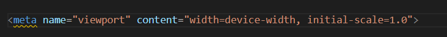
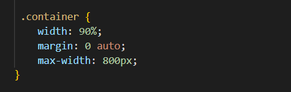
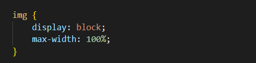
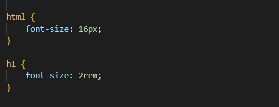

<code comments>
Read my top take-aways from the Scrimba responsive design module. Here's the first part of my checklist for creating a website that is fully responsive.
The responsive design module on Scrimba has cleared up so many CSS questions for me. As I worked through it I made some notes that I have turned into this checklist, that is as much for me as it is for anyone else! There's definitely still a lot of CSS that seems like sorcery, but I'm now feeling a little more confident that I can build something that is actually responsive. I hope you find this useful too.....
It turns out it is SO MUCH easier to start off by designing something to fit a small screen and then scaling it up with media queries than to start big and then try to scale it down.
Include the following meta tag in the head of your html to ensure your site is optimised for all screen sizes:
Block elements will automatically take up 100% of the parent element's width, so if you set the contents of your page within elements with the class "container" and set that container's width to say, 90%, and centre the container, it ensure's your contents looks tidy and remains at the centre of the vieport. You could even set a max-width to stop the contents spreading out on a wider screen.
OK, so this one isn't strictly about responsive design, but it is one of those CSS layout quirks that I will need to keep coming back to: block elements will automatically display one on top of the other and inline elements will display in a row. To change this behaviour use display: inline-block; to make block elements appear in a row display: block; to make inline elements display one on top of another As images are inline elements a handy hint was to set up the CSS for all images like so:
This Free Code Camp article explains in more detail
Use % to set the size of images and containers. This ensures that they flex along with the screen size. But use pixels to set max width so that your contents doesn't get too spread out on a large screen.
REM is the unit that should be used for font size. REM means "root element font size". Rather than fixing font sizes in pixels if you set them to be relative to the root font size then to make your page responsive you simply increase the root element size with your media queries as the screen size increases. In the below example even if the font size of the root element changes the font size of the H1 will always be 2 x the root element's font size.
REM is also a winner when it comes to accessibility as users are able to change their browser's root font size. In this case your text would scale accordingly.
EM is the unit to use when sizing margin and padding. Like REM, EM is scalable, but instead of being relative to the root element EM is relative to the parent element's font size, which of course is relative to the root element if you have used REM to size your font.
That's all for Part I. In Part II I'll go into media queries and using grid layout to make your design responsive.